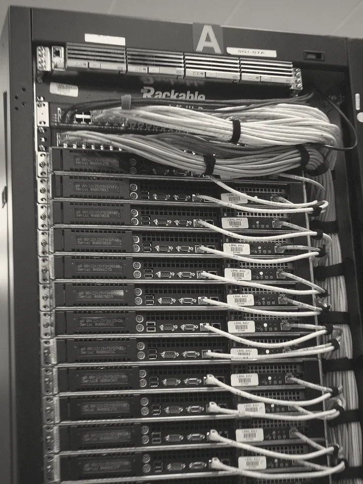
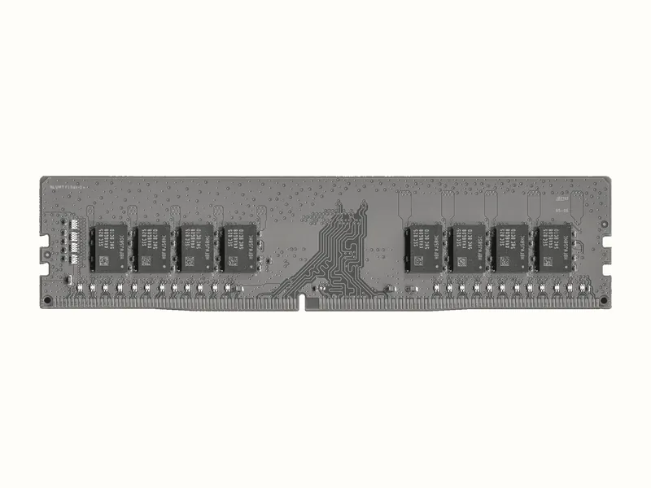
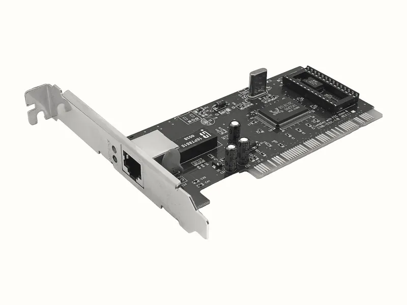
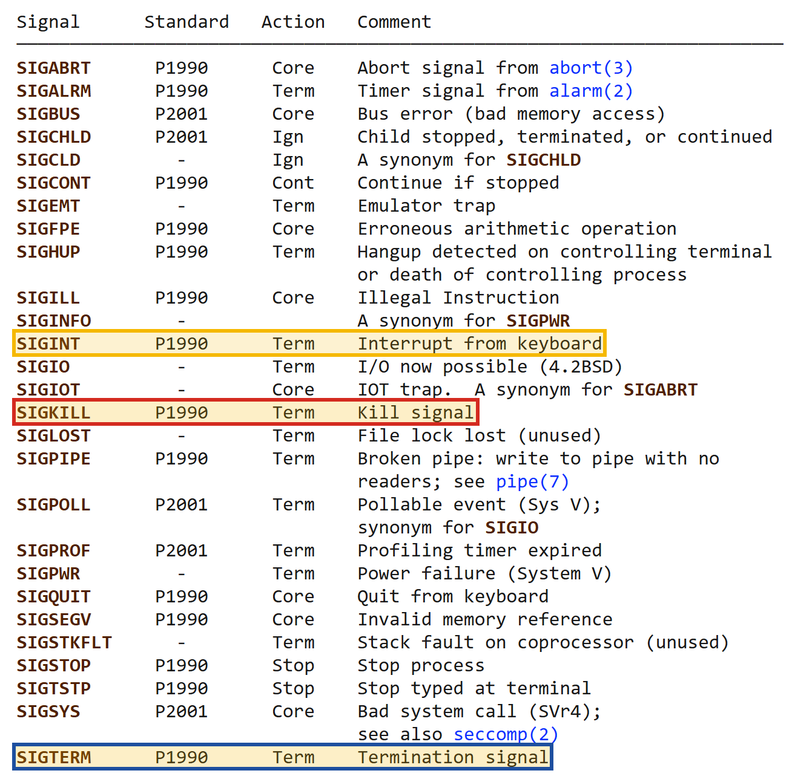

Bạn sắp thuê VPS đầu tiên để đưa ứng dụng Spring Boot + PostgreSQL của mình lên Internet. Nhà cung cấp đưa ra hai gói, và ngoài giá tiền thì mọi con số trong bảng đều là những đơn vị mà một backend developer hằng ngày không mấy khi phải nghĩ tới:
2 vCPU · 2 GB RAM · 40 GB SSD → 5 USD / tháng
4 vCPU · 8 GB RAM · 80 GB SSD → 24 USD / thángCâu hỏi hiển nhiên là chọn gói nào. Nhưng câu hỏi quan trọng hơn, và là câu hỏi mà phần lớn developer không trả lời được, là: trong ba con số đó, con số nào sẽ cạn trước, và khi nó cạn thì hệ thống sẽ hỏng theo kiểu gì?
Vì không trả lời được, người ta thường chọn theo cảm tính: hoặc chọn gói đắt "cho chắc", tức là trả tiền cho sự thiếu hiểu biết của chính mình, hoặc chọn gói rẻ rồi ba tuần sau ngồi debug một sự cố mà họ thậm chí không biết tên. Cả hai kết cục đều có chung một gốc rễ: người chọn không có một mô hình trong đầu về việc bên trong một cái máy chủ thật ra có những gì, và những thứ đó tương tác với nhau ra sao khi một trong số chúng hết.
- Thuê VPS thì con số nào trong bảng cấu hình sẽ hết trước?
- Vì sao hết RAM thì app CHẾT, còn hết CPU thì app chỉ CHẬM?
- Vì sao app chết thì website sập — chuỗi nhân quả đầy đủ, từ tầng vật lý tới con số 502 mà người dùng nhìn thấy trên màn hình?
"Server" thật ra là gì


Từ "server" thường gợi lên hình ảnh một cỗ máy đặc biệt nằm trong một trung tâm dữ liệu lạnh lẽo, nhưng về mặt kỹ thuật thì không có gì huyền bí ở đây cả. Cần phân biệt hai nghĩa của cùng một từ: theo nghĩa phần mềm, server là một chương trình chờ nhận yêu cầu và trả lời (Nginx là một HTTP server, PostgreSQL là một database server); theo nghĩa phần cứng, server là cái máy mà những chương trình đó chạy trên. Trong bài này ta nói về nghĩa thứ hai, và kết luận rất đơn giản: một server là một máy tính bình thường, có CPU, có RAM, có ổ đĩa, có card mạng, y hệt chiếc laptop bạn đang dùng. Cái VPS 5 USD ở Hình 1 thậm chí còn không phải một máy riêng, mà là một máy ảo được cắt ra từ một máy vật lý lớn hơn — nhưng từ góc nhìn của phần mềm chạy bên trong, nó vẫn là một máy tính đầy đủ. Điểm khác biệt giữa server và laptop không nằm ở bản chất phần cứng, mà nằm ở hoàn cảnh sử dụng, và hoàn cảnh đó khác nhau đúng ba điểm.
| Laptop của bạn | Server | |
|---|---|---|
| Thời gian chạy | bật khi làm việc | 24/7, không bao giờ tắt |
| Màn hình, bàn phím | có | không có gì cả (headless) |
| Người ngồi trước nó | bạn | không ai |
Hai điểm đầu dễ hiểu và ít hệ quả. Chạy liên tục 24/7 chỉ có nghĩa là mọi thứ tích tụ theo thời gian — log, rò rỉ bộ nhớ, chứng chỉ sắp hết hạn — sẽ có đủ thời gian để tích tụ tới ngưỡng gây sự cố, đúng như nguyên lý "hệ thống hỏng mà không ai đụng vào" ở Bài 00. Không có màn hình (người ta gọi là headless) chỉ có nghĩa là bạn sẽ điều khiển nó qua mạng bằng dòng lệnh, việc sẽ học ở Bài 13 với SSH. Điểm thứ ba mới là điểm có sức nặng, và đáng được tách riêng ra.
Không có ai ngồi trước server. Trên laptop, bạn chính là hệ thống giám sát: khi một hộp thoại hiện lên, bạn bấm OK; khi một chương trình treo, bạn tắt đi và khởi động lại; khi có thông báo lỗi, bạn nhìn thấy nó ngay. Trên server, không có ai làm ba việc đó. Một hộp thoại chờ người bấm sẽ chờ mãi mãi; một chương trình treo lúc hai giờ sáng sẽ treo nguyên như thế cho tới khi có người phát hiện; một dòng lỗi được in ra sẽ trôi vào một file log mà không ai đọc.
Nhìn theo góc này, gần như mọi kỹ thuật bạn sắp học trong lộ trình — systemd, healthcheck, restart policy, monitoring, alert — đều là những cách khác nhau để tự động hoá vai trò của một con người không có mặt ở đó: có thứ dựng lại chương trình khi nó chết, có thứ đo xem nó còn trả lời không, có thứ đánh thức bạn khi nó hỏng. Giữ câu này trong đầu, bạn sẽ thấy nó lặp lại ở cuối bài, khi ta nói về sự khác nhau giữa process và service.
Bên trong cái hộp: bốn thứ, và chỉ bốn thứ
Nếu bỏ qua mọi chi tiết về vỏ máy, quạt tản nhiệt và nguồn điện, thì một máy tính — dù là laptop hay server — chỉ cung cấp cho phần mềm đúng bốn loại tài nguyên. Mọi chương trình, từ một script vài dòng tới một cụm Spring Boot phức tạp, đều sống bằng cách tiêu thụ bốn thứ này, và mọi sự cố về hiệu năng mà bạn sẽ gặp trong đời đều có thể quy về việc một trong bốn thứ này cạn. Đó cũng chính là ba con số trong bảng giá ở Hình 1 — cộng thêm băng thông mạng, thứ thường được nhà cung cấp ghi ở một dòng nhỏ hơn bên dưới.
CPU RAM DISK NETWORK
thực thi dữ liệu ĐANG lưu trữ truyền dữ
lệnh dùng BỀN VỮNG liệu ra/vào
đo bằng đo bằng GB đo bằng GB đo bằng
số core volatile persistent Mbps
(mất điện (mất điện
là mất) vẫn còn)



- CPU Central Processing Unit · bộ xử lý
- Đơn vị thực thi lệnh. Một CPU có nhiều core, mỗi core tại một thời điểm chỉ chạy được một luồng lệnh. Trên VPS, con số "vCPU" là số core ảo mà máy ảo được chia, không phải số chip vật lý.
- RAM Random Access Memory · bộ nhớ trong
- Nơi chứa dữ liệu và mã lệnh đang được dùng. Nhanh hơn ổ đĩa nhiều bậc độ lớn, nhưng nhỏ hơn, đắt hơn, và mất sạch nội dung khi mất điện — người ta gọi tính chất đó là volatile.
- Disk ổ lưu trữ · SSD/HDD
- Nơi lưu dữ liệu bền vững (persistent): file chương trình, database, log. Tắt máy vẫn còn, nhưng truy cập chậm hơn RAM rất nhiều.
- Network card mạng và băng thông
- Đường ống nối máy với thế giới bên ngoài. Dung lượng của nó đo bằng băng thông (bao nhiêu dữ liệu mỗi giây) và giới hạn bởi bộ đệm của card mạng lẫn của kernel.
Ẩn dụ hỗ trợ ghi nhớ: người, mặt bàn, cái tủ
Bốn định nghĩa ở trên chính xác nhưng khô, và điều quan trọng không phải là từng tài nguyên riêng lẻ mà là quan hệ giữa chúng. Để thấy quan hệ đó, hãy hình dung một văn phòng. Ổ đĩa là cái tủ hồ sơ đặt dưới kho: chứa được rất nhiều, rẻ, bền, nhưng mỗi lần muốn lấy một tập hồ sơ thì phải đi xuống kho tìm. RAM là mặt bàn làm việc: nhỏ hơn cái tủ rất nhiều, nhưng mọi thứ đặt trên bàn thì với tay là tới. CPU là chính người nhân viên: người này chỉ có thể làm việc với những gì đang nằm trên bàn, không bao giờ làm việc trực tiếp với hồ sơ còn trong tủ.
| Là gì | Tính chất | Tắt điện | |
|---|---|---|---|
| DISK | cái tủ hồ sơ trong kho | To, rẻ, chậm | còn nguyên |
| RAM | mặt bàn làm việc | Nhỏ, đắt, nhanh | sạch trơn |
| CPU | chính người làm việc | Chỉ làm được với thứ đang trên bàn | — |
Từ ẩn dụ này rút ra một quy luật có hệ quả trực tiếp: muốn dùng file nào, phải bê nó từ tủ lên bàn trước. Đó chính là điều đang xảy ra trong 30 giây Spring Boot khởi động mà bạn vẫn thường ngồi chờ: JVM đang đọc hàng nghìn file class từ ổ đĩa lên RAM, khởi tạo các bean, mở sẵn các connection tới database và giữ chúng trong connection pool. Và cũng từ ẩn dụ này, ta thấy ngay điều gì sẽ xảy ra khi mặt bàn hết chỗ: người làm việc không còn chỗ để đặt thứ mình cần, và công việc không thể tiếp tục theo cách bình thường được nữa.
Hình ảnh "một người, một cái bàn" gợi ý rằng mỗi lúc chỉ có một việc đang chạy. Thực tế một CPU nhiều core chạy song song thật sự, và ngay trên một core, kernel còn luân phiên hàng trăm process với nhau nhanh tới mức bạn tưởng chúng chạy cùng lúc — cơ chế đó tên là context switching.
Ẩn dụ cũng bỏ qua một tầng quan trọng: giữa CPU và RAM còn có cache (L1, L2, L3), nhanh hơn RAM nhiều bậc. Nói cho đúng thì "mặt bàn" là cache, còn RAM đã là một cái giá sách kê cạnh bàn rồi. Với mục đích của bài này — hiểu vì sao hết RAM thì app chết — mức chi tiết đó chưa cần thiết, nhưng đừng mang ẩn dụ này đi tối ưu hiệu năng cấp thấp.
Bốn tài nguyên cạn kiệt theo bốn kiểu rất khác nhau
Đây là phần quan trọng nhất của tab này, và là câu trả lời cho câu hỏi "con số nào hết trước" ở tình huống mở bài. Điều mà người mới thường không ngờ tới là bốn tài nguyên không chỉ khác nhau về lượng mà còn khác nhau về cách hỏng: mỗi loại khi cạn sẽ sinh ra một kiểu triệu chứng riêng, và nếu nhận ra được kiểu triệu chứng thì bạn đã khoanh vùng được nguyên nhân trước khi mở bất kỳ file log nào.
| Tài nguyên | Hết thì chuyện gì xảy ra | Mức độ |
|---|---|---|
| CPU | Công việc xếp hàng chờ. Không ai chết, chỉ chậm dần. | Chậm |
| RAM | Kernel GIẾT một process để lấy lại chỗ | Chết |
| DISK | Không ghi được gì nữa. Log tắt, DB không commit được. | Lỗi rất lạ |
| NETWORK | Gói tin bị vứt bỏ | Timeout |
Vì sao hết CPU chỉ làm chậm? Bởi vì thời gian của CPU là một tài nguyên chia sẻ theo lượt: bộ lập lịch (scheduler) của kernel cho mỗi chương trình chạy một khoảng rất ngắn rồi chuyển sang chương trình khác, nhanh tới mức từ bên ngoài ta thấy chúng như chạy cùng lúc. Khi có quá nhiều việc, không có việc nào bị huỷ; hàng đợi chỉ dài ra, và mỗi việc phải chờ lâu hơn tới lượt mình. Trong ẩn dụ văn phòng, đó là một người phải làm quá nhiều hồ sơ: việc gì cũng xong, chỉ là xong muộn.
Ngược lại, RAM là một tài nguyên chiếm giữ: một byte đã được cấp cho chương trình này thì
không thể đồng thời được dùng bởi chương trình khác. Khi mặt bàn hết chỗ, chờ đợi không giải quyết
được gì, vì không ai tự nguyện dọn đồ của mình xuống. Kernel buộc phải chọn một chương trình và
giết nó để thu hồi phần bàn nó đang chiếm. Ổ đĩa đầy thì lại hỏng theo một kiểu thứ
ba, khó chịu hơn: chương trình vẫn sống, nhưng mọi thao tác ghi đều thất bại với lỗi No space
left on device, nên những thứ tưởng như không liên quan lần lượt trục trặc — log ngừng ghi
(khiến bạn mất luôn công cụ để điều tra), database từ chối commit, file tạm không tạo được. Mạng quá
tải thì gói tin bị vứt bỏ khi bộ đệm đầy, và phía gửi chỉ thấy im lặng cho tới khi hết kiên nhẫn —
tức là timeout, đúng loại triệu chứng "không có câu trả lời nào cả" mà ta đã phân tích
ở Bài 00.
Hết CPU thì app CHẬM. Hết RAM thì app CHẾT.
Đây không phải một thang đo nặng nhẹ, như thể hết RAM là "hết CPU nhưng tệ hơn". Đây là hai loại sự cố hoàn toàn khác nhau về bản chất — một bên là tài nguyên chia theo lượt nên chỉ sinh ra chờ đợi, một bên là tài nguyên chiếm giữ nên buộc phải có kẻ bị loại — và như phần dưới sẽ cho thấy, bạn đã có sẵn công cụ để phân biệt chúng từ Bài 00.
Nối thẳng về bản đồ 9 chặng
Hãy đặt hai kiểu hỏng này vào đúng chặng 78 của bản đồ, nơi Nginx đứng trước Spring Boot. Khi máy hết CPU, Spring Boot vẫn sống và vẫn nhận request, nhưng mỗi request phải xếp hàng chờ CPU nên câu trả lời tới quá chậm; Nginx đợi tới hết khoảng thời gian nó được cấu hình để đợi, rồi tự viết ra một trang lỗi 504 Gateway Timeout. Khi máy hết RAM, Spring Boot bị giết, phòng 8080 trở nên trống trơn; Nginx gõ cửa và bị từ chối ngay lập tức, rồi tự viết ra trang lỗi 502 Bad Gateway.
Hết CPU → app còn sống nhưng trả lời quá chậm
↓
Nginx đợi hết kiên nhẫn
↓
504 Gateway Timeout
Hết RAM → app BỊ GIẾT, phòng 8080 trống trơn
↓
Nginx gõ cửa, không ai mở
↓
502 Bad GatewayBài 00 dạy bạn đọc triệu chứng. Bài này cho bạn nguyên nhân vật lý nằm bên dưới triệu chứng đó. Khi hai lớp kiến thức ghép vào nhau, một con số trên màn hình người dùng trở thành một manh mối về tầng phần cứng.
502 và 504 không phải hai mã lỗi cần học thuộc. Chúng là hai loại tài nguyên đã cạn.
Quay lại tình huống mở bài: với stack Spring Boot + PostgreSQL, con số thường cạn trước là RAM, bởi vì cả JVM lẫn PostgreSQL đều là những chương trình chủ động giữ nhiều bộ nhớ để chạy nhanh, trong khi phần lớn thời gian CPU của một ứng dụng web nhỏ ngồi chờ database và mạng. Đây là một nhận định "thường thì", không phải "luôn luôn" — một ứng dụng xử lý ảnh hay mã hoá nặng có thể cạn CPU trước — và cách duy nhất để biết chắc là đo, việc ta sẽ học ở Bài 37 với Prometheus và Grafana.
File .jar nằm trên đĩa là một thứ chết
Có một sự phân biệt mà developer dùng hằng ngày mà ít khi gọi tên: sự khác nhau giữa một
chương trình và một process. File app.jar mà Maven build ra là một
chương trình — một file nén chứa bytecode, nằm yên trên ổ đĩa. Nó không làm gì cả: không chiếm port
nào, không trả lời ai, không tiêu tốn chút CPU nào. Bạn có thể copy nó, xoá nó, gửi nó qua email cho
đồng nghiệp, và nó vẫn chỉ là một chuỗi byte trong cái tủ hồ sơ. Mọi thứ thay đổi vào khoảnh khắc bạn
gõ:
java -jar app.jarLúc đó, shell yêu cầu kernel tạo ra một thực thể mới: kernel cấp cho nó một vùng RAM riêng, một con số định danh, một bảng sổ sách riêng ghi lại những file nó đang mở, rồi nạp mã của JVM vào và cho nó chạy. Thực thể đang sống đó mới là thứ giữ phòng 8080, mới là thứ trả lời request, và mới là thứ có thể chết.
Một process (tiến trình) là một chương trình đang được thực thi. Chuẩn
POSIX định nghĩa chặt hơn: process là một không gian địa chỉ (address space) cùng với một
hoặc nhiều thread đang chạy bên trong không gian đó, và các tài nguyên hệ thống mà những thread ấy
cần. Nói cách khác, chương trình là công thức nấu ăn in trong sách; process là một lần
nấu cụ thể đang diễn ra trong bếp, với nồi, lửa và nguyên liệu thật. Cùng một công thức có thể
được nấu nhiều lần cùng lúc — cũng như cùng một file app.jar có thể chạy thành nhiều
process độc lập.
app.jar trên đĩa → process đang chạy
──────────────── ─────────────────
một file, nằm im PID 4123
không chiếm gì chiếm 800 MB RAM
không ai gọi được đang giữ phòng 8080
copy được, xóa được kill được — và chết là hếtỞ Bài 00 ta nói: "port là số phòng, và phải có NGƯỜI ngồi trong phòng đó thì gõ cửa mới có ai mở." Giờ ta biết người đó thật ra là gì. Cái "người ngồi trong phòng 8080" — chính là process này. Và người đó có tên: một con số gọi là PID, do kernel cấp.
PID và cây process
fork() rồi process con gọi exec() — được Unix đưa vào dùng rộng rãi, và Linux kế thừa gần như nguyên vẹn. Ảnh: không rõ tác giả, Wikimedia Commons, public domain; đã chuyển hai tông mực/giấy, phóng to hai lần vì ảnh gốc rất nhỏ.
Kernel cần một cách để gọi tên từng process, và cách nó dùng là một con số nguyên gọi là PID
(process identifier). PID được cấp khi process sinh ra và thu hồi khi process chết, nên nó
không phải một định danh cố định của ứng dụng: khởi động lại Spring Boot là có một
PID mới. Điều thú vị hơn là cách process được sinh ra. Trên Unix và Linux, một process mới không bao
giờ tự nhiên xuất hiện; nó luôn được tạo ra bởi một process đang tồn tại, qua hai bước kinh điển: lời
gọi fork() nhân bản process hiện tại thành một bản sao gần như y hệt (gọi là process
con), rồi process con gọi execve() để thay toàn bộ chương trình của mình bằng một chương
trình khác. Khi bạn gõ java -jar app.jar trong bash, chính bash đã fork ra một bản sao
của nó, và bản sao đó exec thành java. Vì mọi process đều có cha, tập hợp mọi process
trên máy tạo thành một cây.
| Khái niệm | Là gì |
|---|---|
| PID | Số định danh của process. Kernel cấp khi sinh, thu lại khi chết. Không cố định — restart app là có PID mới. |
| PPID | PID của process cha. Mọi process đều được sinh ra bởi một process khác. |
| PID 1 | Gốc của cây. Process đầu tiên kernel tạo khi máy khởi động. Trên Linux thường là systemd. |
PID 1 systemd
├── PID 892 sshd
│ └── PID 3301 bash ← terminal bạn đang gõ
│ └── PID 4123 java -jar app.jar
├── PID 901 nginx (master)
│ ├── PID 902 nginx (worker) ← chạy bằng user thường
│ └── PID 903 nginx (worker)
└── PID 1024 postgresCây này kể lại khá nhiều câu chuyện. Nhánh sshd bash java cho thấy ứng dụng của
bạn đang là con cháu của phiên SSH bạn đăng nhập — nghĩa là nếu phiên đó đóng lại một cách
không khéo, ứng dụng có thể bị kéo chết theo; đây là một lý do nữa để không chạy ứng dụng production
bằng cách gõ tay trong terminal. Nhánh nginx cho thấy một master và nhiều
worker: đó chính là cơ chế "khởi động bằng root chỉ để chiếm port, rồi hạ quyền ngay" mà ta
đã nêu ở lý do 5 trong Bài 00. Process master chạy bằng root để được phép giữ phòng 443, còn các
worker — những process thật sự tiếp khách — chạy bằng một user thường, để nếu một worker bị khai thác
thì kẻ tấn công chỉ có được quyền của user đó. Giờ bạn nhìn thấy cơ chế ấy hiện ra trong cây.
Chuyện gì xảy ra khi process cha chết trước con? Process con không biến mất theo, mà trở thành
mồ côi, và kernel gán nó cho một process khác nhận nuôi — theo truyền thống là PID 1. Đó
là một trong những trách nhiệm đặc biệt của PID 1: nhận nuôi mọi process mồ côi và "thu dọn" chúng
khi chúng chết bằng cách gọi wait() để đọc trạng thái kết thúc của chúng. Một process
đã chết nhưng chưa được cha đọc trạng thái sẽ tồn tại dưới dạng zombie trong bảng process.
Chi tiết này nghe rất hàn lâm, nhưng nó sẽ quay lại ở Module Docker: bên trong một container, chính
ứng dụng của bạn có thể trở thành PID 1, và phải gánh luôn những trách nhiệm đó.
Mỗi process sở hữu những gì
Nếu process là "một người ngồi trong phòng", thì kernel không chỉ cấp cho người đó một cái tên mà
còn cấp cả một bộ đồ nghề riêng, và bộ đồ nghề đó là thứ tách process này khỏi process khác. Trên
Linux, bạn có thể nhìn thấy từng món trong bộ đồ nghề ấy qua thư mục ảo /proc/<PID>/
mà kernel dựng ra cho mỗi process: environ chứa biến môi trường, cwd trỏ
tới thư mục làm việc, fd/ liệt kê các file đang mở.
PID 4123 java -jar app.jar
│
├── vùng RAM riêng ← không đọc được RAM của process khác
├── bảng file descriptor ← danh sách file/socket đang mở
├── thư mục làm việc (cwd) ← đường dẫn tương đối tính từ đây
├── biến môi trường riêng ← SPRING_DATASOURCE_PASSWORD sống ở đây
└── user chạy nó ← quyết định nó được đọc/ghi file nàoDòng đầu tiên — vùng RAM riêng — là nền móng của sự an toàn trên một máy nhiều chương trình. Mỗi process nhìn thấy một không gian địa chỉ ảo của riêng nó (virtual memory): địa chỉ 0x1000 trong process A và địa chỉ 0x1000 trong process B được phần cứng quản lý bộ nhớ dịch sang hai vị trí vật lý hoàn toàn khác nhau. Hệ quả là process A không thể vô tình (hay cố tình) đọc mật khẩu đang nằm trong RAM của process B. Bốn dòng còn lại đem tới hai hệ quả mà bạn dùng được ngay.
1 Biến môi trường là thuộc tính của PROCESS, không phải của máy. Khi một
process fork ra process con, con nhận một bản sao biến môi trường của cha tại thời điểm
đó; từ đó trở đi, hai bản sao sống độc lập. Đó là lý do export trong một terminal
không ảnh hưởng tới terminal khác, và cũng là lý do docker run -e hoạt động: Docker
đang nhét biến vào riêng process đó lúc khởi tạo nó.
2 User chạy process quyết định nó phá được gì. Mọi quyết định cho phép hay từ
chối truy cập file đều được kernel đưa ra dựa trên user của process. App chạy bằng
root mà có lỗ hổng thì kẻ tấn công có cả máy; app chạy bằng một user riêng thì kẻ tấn
công chỉ có đúng phần của user đó. Bài 05,
Bài 17.
Process và thread — đừng nhầm
Một câu hỏi tự nhiên nảy sinh: nếu mỗi process có mặt bàn riêng, thì làm sao Spring Boot phục vụ hàng trăm request cùng lúc? Câu trả lời là thread (luồng). Một thread là một dòng thực thi độc lập bên trong một process: mỗi thread có con trỏ lệnh riêng và ngăn xếp (stack) riêng, nhưng mọi thread trong cùng một process dùng chung không gian bộ nhớ và bảng file descriptor của process đó. Trên Linux, kernel thậm chí quản lý thread và process bằng cùng một cấu trúc; khác biệt nằm ở chỗ thread được tạo ra với lựa chọn chia sẻ bộ nhớ, còn process thì không.
PROCESS = một CĂN PHÒNG riêng, có mặt bàn riêng.
Không nhìn thấy mặt bàn của phòng khác.
THREAD = nhiều NGƯỜI cùng làm việc TRONG MỘT PHÒNG,
dùng chung một mặt bàn.Spring Boot của bạn là MỘT process với hàng trăm thread — theo mô hình truyền thống, Tomcat nhúng bên trong giữ một pool thread và giao mỗi HTTP request cho một thread trong pool. (Từ Java 21 có thêm virtual thread, cho phép rất nhiều thread "nhẹ" chạy trên một số ít thread của hệ điều hành, nhưng điều đó không thay đổi các hệ quả dưới đây: chúng vẫn nằm trong cùng một process.) Chính việc dùng chung mặt bàn là nguồn gốc của cả ưu điểm lẫn rủi ro.
| Hệ quả | Vì sao |
|---|---|
| Giết process là giết TẤT CẢ thread | Không có chuyện "giết một request". Đập phòng thì mọi người trong phòng cùng ra. |
| Một thread làm tràn RAM thì CẢ process chết | Thread dùng chung mặt bàn. Một người bày bừa hết bàn thì cả phòng đứng. |
| Thread rẻ hơn process rất nhiều | Mở thêm người vào phòng có sẵn, rẻ hơn xây phòng mới |
Hệ quả thứ hai đáng để suy ngẫm thêm, vì nó giải thích một hiện tượng gây bối rối: chỉ một endpoint có lỗi — chẳng hạn một API xuất báo cáo nạp cả bảng dữ liệu vào bộ nhớ — cũng đủ làm sập toàn bộ ứng dụng, kéo theo mọi endpoint khác vốn hoàn toàn khoẻ mạnh. Không có vách ngăn nào giữa các thread về mặt bộ nhớ; đó là cái giá của việc chúng chia sẻ bộ nhớ để trao đổi dữ liệu nhanh.
Vì sao Spring Boot không tự ghi thẳng vào ổ cứng?
Hãy làm một thí nghiệm tưởng tượng: điều gì sẽ xảy ra nếu mọi chương trình trên máy đều được chạm thẳng vào phần cứng, tự ghi vào ổ đĩa, tự điều khiển card mạng, tự đọc bất kỳ ô nhớ nào? Ngay lập tức có ba loại thảm hoạ. Một app lỗi có thể ghi đè lên vùng RAM của app khác, làm nó hỏng theo những cách không thể đoán trước. Hai app cùng ghi vào một vị trí trên đĩa mà không biết sự tồn tại của nhau, làm hỏng dữ liệu của cả hai. Và một app độc hại có thể đọc mật khẩu đang nằm trong bộ nhớ của app khác. Kết luận tất yếu là phải có một lớp trung gian nắm độc quyền phần cứng, đứng giữa mọi chương trình và máy, quyết định ai được làm gì. Lớp đó là kernel.
Kernel (nhân hệ điều hành) là phần lõi của hệ điều hành, chạy ở chế độ đặc quyền của CPU (kernel mode) và là thành phần duy nhất được phép thao tác trực tiếp với phần cứng. Mọi chương trình còn lại — kể cả những thứ trông rất "hệ thống" như shell hay Nginx — chạy ở chế độ hạn chế (user mode), trong một vùng gọi chung là user space. Sự phân tách này không phải quy ước giấy tờ: nó được chính CPU cưỡng chế bằng các mức đặc quyền phần cứng, nên một chương trình ở user mode không thể thực thi lệnh đặc quyền dù có muốn.
┌──────────────── USER SPACE ─────────────────┐
│ │
│ Spring Boot Nginx PostgreSQL bash │ ← KHÔNG được
│ │ chạm phần cứng
└───────────────────────┬─────────────────────┘
│
syscall ← cách DUY NHẤT để xin việc
│
┌───────────────────────▼─────────────────────┐
│ KERNEL │ ← độc quyền phần cứng
└───────────────────────┬─────────────────────┘
▼
CPU RAM DISK NETWORKsyscall — app không tự làm, nó XIN kernel làm hộ
Nếu chương trình không được chạm phần cứng, làm sao nó đọc được file hay mở được kết nối mạng? Nó phải xin. Cơ chế xin đó gọi là system call, thường viết tắt là syscall: chương trình đặt yêu cầu của mình vào vài thanh ghi, rồi thực thi một lệnh CPU đặc biệt để chuyển quyền điều khiển sang kernel. Kernel kiểm tra yêu cầu có hợp lệ không, process có quyền không, thực hiện nó, rồi trả kết quả về và cho chương trình chạy tiếp ở user mode. Linux có vài trăm syscall khác nhau, nhưng những syscall quan trọng với người vận hành thì chỉ gói gọn trong vài nhóm.
| Nhóm | syscall | App đang xin gì |
|---|---|---|
| File | open read write close | "Mở hộ tôi file này" |
| Mạng | socket bind listen accept | "Giữ hộ tôi phòng 8080" |
| Process | fork execve kill | "Tạo hộ tôi một process mới" |
| Bộ nhớ | mmap brk | "Cho tôi xin thêm chỗ trên bàn" |
Điều đáng để ý là code Java của bạn không bao giờ gọi trực tiếp những syscall này. Khi bạn viết
new FileInputStream(f), lời gọi đi qua thư viện chuẩn của Java, xuống mã native của
JVM, xuống thư viện C của hệ điều hành, và cuối cùng mới tới syscall open. Nhưng dù đi
qua bao nhiêu lớp, đích đến cuối cùng luôn là một lời xin gửi tới kernel. Chính vì thế, hiểu kernel
là hiểu được những lỗi mà không framework nào che giấu nổi.
Cơ chế vừa mô tả gói lại được thành một hình ảnh. Trong ẩn dụ tòa nhà của Bài 00, kernel đóng
vai người quản lý tòa nhà, và một trong những cuốn sổ quan trọng nhất người đó giữ là sổ phòng. Khi Spring Boot "listen ở port 8080", thực tế nó
gọi bind() rồi listen() — tức là xin kernel giữ phòng 8080 hộ
nó. Kernel ghi vào sổ: "phòng 8080 PID 4123". Từ lúc đó, mọi gói tin gửi tới
phòng 8080 đều được kernel chuyển cho đúng process ấy.
Ba hiện tượng bạn đã gặp ở Bài 00 giờ có lời giải thích đầy đủ, và cả ba đều quy về cuốn sổ này:
Address already in use → kernel xem sổ, phòng 8080 đã có tên người khác
kill process → refused → process chết, kernel XÓA TÊN khỏi sổ ngay lập tức
port <1024 cần root → kernel kiểm tra quyền TRƯỚC khi cho ghi sổTrên Linux hiện đại, câu "port dưới 1024 cần root" là cách nói gọn của một cơ chế tinh vi hơn:
kernel chia đặc quyền của root thành nhiều mảnh nhỏ gọi là capabilities, và mảnh cần để
giữ phòng số nhỏ tên là CAP_NET_BIND_SERVICE. Một process có thể được cấp riêng mảnh
này mà không cần toàn bộ quyền root. Còn khi bind() thất bại vì phòng đã có người, lỗi
mà kernel trả về có mã EADDRINUSE — chính là dòng Address already in use
mà Spring Boot in ra, chỉ được dịch sang chữ cho người đọc.
File descriptor — và vì sao 2>/dev/null hoạt động
Unix có một triết lý thiết kế nổi tiếng: mọi thứ đều là file. File thật trên đĩa,
kết nối mạng, pipe nối hai chương trình, cửa sổ terminal — với chương trình, tất cả đều được thao tác
bằng cùng một bộ syscall read và write. Khi một process mở bất kỳ thứ nào
trong số đó, kernel không trả về bản thân đối tượng mà trả về một con số, gọi là
file descriptor (fd). Con số đó là chỉ mục trỏ vào một bảng riêng của process, nơi
kernel ghi lại những thứ process đang mở. Từ đó về sau, process chỉ cần nói "ghi vào fd số 7", kernel
sẽ biết số 7 nghĩa là file log hay kết nối tới database.
Mỗi process có bảng fd riêng, đánh số từ 0, và theo quy ước của POSIX thì ba số đầu tiên luôn luôn mang cùng một ý nghĩa ở mọi process, vì process con thừa kế chúng từ cha ngay khi sinh ra:
fd 0 → stdin (đầu vào)
fd 1 → stdout (đầu ra bình thường)
fd 2 → stderr (đầu ra lỗi)openssl s_client -connect example.com:443 2>/dev/nullCon số 2 đó chính là fd số 2 — stderr, còn /dev/null
là một "file" đặc biệt mà mọi thứ ghi vào đều biến mất. Câu lệnh nghĩa là: "trước khi chạy
process này, hãy nối fd số 2 của nó vào hố đen." Việc nối lại đó do shell làm, hoàn toàn bên
ngoài openssl; bản thân openssl vẫn ghi lỗi vào fd 2 như bình thường, chỉ
là fd 2 giờ không dẫn tới màn hình nữa.
Đó là lý do output trở nên sạch sẽ, chỉ còn phần chứng chỉ. Bạn không tắt lỗi — bạn
đổi hướng fd số 2. Và vì stdout (fd 1) không bị đụng tới, phần kết quả chính vẫn
chảy qua pipe sang lệnh openssl x509 phía sau.
Và vì sao Too many open files làm sập server
Triết lý "mọi thứ đều là file" có một hệ quả vận hành mà rất nhiều developer chỉ biết tới sau một
sự cố: mỗi kết nối TCP cũng là một fd. Một nghìn người dùng đang kết nối tới ứng dụng
nghĩa là process đang giữ ít nhất một nghìn fd, cộng thêm các connection tới database, các file log,
các file class của JVM đang mở. Mà fd không phải vô hạn: kernel giới hạn số fd mỗi process được giữ
cùng lúc, giới hạn có thể xem bằng ulimit -n và trên nhiều bản phân phối Linux mặc định
thường là 1024. Khi process chạm trần:
Too many open files
↓
Process VẪN SỐNG, nhưng không nhận thêm kết nối mới được nữa
↓
Người dùng: "lúc vào được, lúc không"
↓
Log ứng dụng: gần như không có gì rõ ràngKiểu sự cố này đặc biệt khó chịu vì nó nằm lọt giữa các loại triệu chứng quen thuộc: process vẫn sống nên không có 502, những kết nối cũ vẫn chạy nên không phải hỏng hoàn toàn, và mỗi khi có kết nối cũ đóng lại thì lại có chỗ cho một kết nối mới — thế là người dùng thấy hệ thống "lúc được lúc không", triệu chứng khó tái hiện nhất.
Nguyên nhân phổ biến nhất không phải lượng truy cập tăng, mà là rò rỉ: code mở
file hoặc connection mà không đóng, nên mỗi request lại để lại một fd mồ côi, và sau vài giờ hay vài
ngày thì bảng fd đầy. Trong Java, đó chính là lý do phải dùng try-with-resources:
// SAI: rò rỉ fd nếu có exception
InputStream in = new FileInputStream(f);
doSomething(in);
in.close();
// ĐÚNG: kernel luôn được trả lại fd
try (InputStream in = new FileInputStream(f)) {
doSomething(in);
}Ở phiên bản đầu, nếu doSomething ném exception thì dòng close() không
bao giờ chạy, và fd đó bị giữ cho tới khi process chết. Một cấu trúc cú pháp tưởng như chỉ là chuyện
style, hoá ra là chuyện tài nguyên kernel.
Năm cách chết, và chỉ ba cách kịp dọn dẹp
Một process không sống mãi, và cách nó chết quyết định hệ thống còn lại trong trạng thái nào. Một ứng dụng Spring Boot đang chạy luôn giữ những thứ cần được trả lại tử tế: connection tới database, transaction đang dở, dữ liệu log còn nằm trong bộ đệm chưa kịp ghi xuống đĩa. Nếu nó được báo trước, nó có thể dọn dẹp những thứ đó; nếu không, chúng bị bỏ lại giữa chừng. Có năm con đường dẫn tới cái chết của một process, và điểm mấu chốt là phân biệt được con đường nào cho phép dọn dẹp.
| Cách chết | Ai quyết định | Kịp dọn dẹp? |
|---|---|---|
| Tự kết thúc bình thường | chính app | |
| Exception không bắt được | chính app | shutdown hook vẫn chạy |
SIGTERM — kill <pid> | người / hệ thống | app được báo trước |
SIGKILL — kill -9 | kernel, ép buộc | chết ngay lập tức |
| OOM killer | kernel | như SIGKILL |
- Signal tín hiệu
- Một thông báo không đồng bộ mà kernel gửi tới process, mang một con số và một ý nghĩa quy ước. Process có thể đăng ký hàm xử lý (handler) cho phần lớn signal; nếu không đăng ký, mỗi signal có một hành vi mặc định — với SIGTERM và SIGINT, mặc định là kết thúc process.
- SIGINT signal số 2
- "Ngắt": signal mà terminal gửi cho chương trình đang chạy khi bạn bấm Ctrl+C.
- SIGTERM signal số 15
- "Xin hãy kết thúc": signal mặc định của lệnh
kill. Process bắt được nó, nên có cơ hội dọn dẹp trước khi thoát. - SIGKILL signal số 9
- "Kết thúc ngay": signal không thể bị bắt, chặn hay bỏ qua. Process không bao giờ nhận được nó theo nghĩa thông thường — kernel trực tiếp xoá process.
- Exit code mã thoát
- Con số process trả về khi kết thúc: 0 nghĩa là thành công, khác 0 nghĩa là có vấn đề. Khi process
bị giết bởi một signal, shell thường báo mã
128 + số signal.
SIGTERM và SIGKILL — một khác biệt rất thật

signal(7). Cả ba dòng khoanh đều có hành động mặc định Term — kết thúc process — nhưng chỉ SIGKILL là không bắt được và không bỏ qua được, nên app không có cơ hội dọn dẹp. Cột Standard ghi P1990 nghĩa là tín hiệu đã có từ chuẩn POSIX.1-1990. Chụp màn hình man7.org ngày 30/09/2026; khung và nhãn do người viết thêm vào.Nếu phải chọn một cặp khái niệm quan trọng nhất trong tab này, đó là SIGTERM và SIGKILL. Cả hai đều dẫn tới cùng một kết cục là process biến mất, nhưng chúng khác nhau ở một điểm quyết định: SIGTERM là một lời đề nghị gửi tới process, còn SIGKILL là một mệnh lệnh thực thi bởi kernel mà process không hề được hỏi ý kiến. Với SIGTERM, kernel chuyển signal tới process, và nếu process đã đăng ký handler — Spring Boot có đăng ký — thì handler đó chạy, cho ứng dụng cơ hội thu xếp. Với SIGKILL, không có handler nào được gọi: kernel đơn giản là dừng mọi thread của process và thu hồi toàn bộ tài nguyên của nó.
SIGTERM "Anh thu xếp rồi đi."
→ Spring Boot chạy @PreDestroy
→ đóng connection pool, trả connection về DB
→ flush log ra đĩa
→ rồi mới thoát
SIGKILL "Ra ngay."
→ không chạy một dòng nào
→ connection treo lại ở phía database
→ transaction dở dang
→ dòng log cuối cùng mấtdocker stop hành xử như nó hành xử
docker stop gửi SIGTERM, rồi đợi 10 giây. Nếu
process vẫn chưa chết, nó mới gửi SIGKILL. Thiết kế này là một thoả hiệp có chủ
đích: mười giây là khoảng ân hạn để app kịp dọn dẹp, nhưng hệ thống không thể chờ mãi một process
có thể đã treo, nên sau ân hạn thì chuyển sang ép buộc.
Hệ quả thực tế: nếu app của bạn cần lâu hơn mười giây để dọn dẹp, bạn sẽ mất dữ liệu ở mỗi lần deploy mà không hề biết, vì cú SIGKILL không để lại dấu vết gì trong log ứng dụng. Bài 06, Bài 35.
OOM killer — kẻ sát nhân trong kernel
Ở tab Bốn tài nguyên, ta nói rằng khi RAM cạn thì kernel phải giết một process. Giờ ta xem nó
làm điều đó như thế nào. Cơ chế này có tên là OOM killer (Out-Of-Memory
killer). Khi kernel không còn cách nào khác để tìm bộ nhớ trống, nó không có lựa chọn "từ chối
lịch sự"; nó phải lấy lại chỗ từ một process nào đó. Để chọn nạn nhân, kernel chấm điểm từng process
— điểm này có thể xem trong /proc/<PID>/oom_score — và giết process có
điểm cao nhất bằng SIGKILL. Điểm số chủ yếu dựa trên một tiêu chí rất thực dụng: ai
đang chiếm nhiều bộ nhớ nhất, vì giết kẻ đó sẽ giải phóng được nhiều chỗ nhất chỉ bằng một
lần ra tay.
Câu hỏi hợp lý: sao kernel không trả lời "hết chỗ rồi" ngay khi chương trình xin thêm bộ nhớ,
như cách nó từ chối một file không có quyền? Lý do là mặc định Linux cho phép overcommit:
khi chương trình xin một vùng nhớ, kernel thường đồng ý ngay nhưng chưa cấp RAM vật lý thật; trang
nhớ thật chỉ được cấp vào lúc chương trình chạm tới nó lần đầu. Cách làm này tiết kiệm rất
nhiều, vì chương trình hay xin nhiều hơn mức thật sự dùng. Nhưng cái giá là tới lúc chương trình
chạm vào một trang nhớ đã được hứa mà RAM vật lý không còn, kernel không thể "rút lại lời hứa" với
một lời từ chối được nữa — và OOM killer là lối thoát cuối cùng. Hành vi overcommit có thể điều chỉnh
qua tham số vm.overcommit_memory, và mức độ "dễ bị chọn" của từng process có thể điều
chỉnh qua /proc/<PID>/oom_score_adj.
Chính là JVM. JVM giữ một vùng heap lớn cho các object của ứng dụng, cộng thêm bộ nhớ cho metaspace, cho stack của hàng trăm thread, cho mã đã được biên dịch — nên trên một server chạy Spring Boot, nó thường là process lớn nhất máy.
Hệ quả phản trực giác: khi server hết RAM, process bị giết gần như luôn luôn là chính app của bạn — kể cả khi thủ phạm gây hết RAM là một process khác, chẳng hạn một script backup chạy lúc nửa đêm. Kernel không tìm kẻ có lỗi; nó tìm kẻ mà giết đi thì được nhiều chỗ nhất.
Dấu hiệu nhận biết OOM — và vì sao nó khó tìm
Triệu chứng đặc trưng:
app BIẾN MẤT đột ngột
log ứng dụng KHÔNG CÓ GÌ CẢ ← không một dòng lỗi, không stack trace
không ai deploy, không ai đụng vàoVì sao log ứng dụng trống trơn? Vì app bị SIGKILL: như Bảng 7 đã chỉ ra, SIGKILL không cho process chạy thêm một dòng nào, nên không có cơ hội nào để framework logging ghi ra một câu "tôi sắp chết vì hết bộ nhớ". Đây là điểm khiến OOM trở thành một trong những sự cố gây bối rối nhất cho người chỉ quen đọc log ứng dụng: họ tìm kiếm một stack trace ở nơi mà về nguyên tắc không thể có stack trace nào.
Log ứng dụng trống không có nghĩa là không có dấu vết — dấu vết chỉ nằm ở chỗ khác. Kẻ ra tay là kernel, và kernel tự ghi lại việc nó đã giết ai vào log của chính nó:
dmesg | grep -i "killed process"
journalctl -k | grep -i oomĐó là nơi duy nhất ghi lại sự việc. Không biết chỗ này thì bạn sẽ tìm mãi trong log ứng
dụng — nơi chắc chắn không có gì. Còn khi ứng dụng chạy trong container, Docker sẽ báo container thoát
với mã 137, tức là 128 + 9: dấu vân tay của SIGKILL.
Vì sao "app chết thì website sập" — chuỗi đầy đủ
Giờ ta có đủ mảnh ghép để trả lời câu hỏi thứ ba ở đầu bài một cách trọn vẹn, đi một mạch từ tầng vật lý tới con số người dùng nhìn thấy. Hãy đọc chuỗi dưới đây như một bằng chứng toán học: mỗi bước là hệ quả tất yếu của bước trước, và mỗi bước dựa trên một khái niệm bạn đã gặp.
1 RAM cạn
↓
2 Kernel chấm điểm, chọn JVM (ăn RAM nhiều nhất)
↓
3 SIGKILL — process 4123 biến mất tức thì, không kịp log
↓
4 Kernel XÓA TÊN khỏi sổ phòng: 8080 → (trống)
↓
5 Nginx nhận request, gõ cửa 127.0.0.1:8080
↓
6 Kernel trả lời Nginx: "không có ai ở đây" ← Connection refused
↓
7 Nginx dịch sang ngôn ngữ HTTP cho người dùng:
502 Bad GatewayBước 6 chính là Connection refused mà bạn đã tự tay đo được ở Bài 00 — curl báo
2076 ms, lệnh time đo cả lượt là 2,155 giây — chỉ
khác là lần này nó xảy ra bên trong server, và Nginx là người hứng nó thay cho curl.
Đây là ý nghĩa đầy đủ của câu "triệu chứng khoanh vùng chứ không chỉ đích": người dùng thấy 502, nhưng nguyên nhân thật nằm ở bước 1 — sáu bước phía trước, ở một tầng mà trang lỗi không bao giờ nhắc tới. Sửa bằng cách restart app thì 502 biến mất, nhưng bước 1 vẫn còn nguyên và sẽ lặp lại.
Process và service — khác nhau ở một người
Chuỗi bảy bước ở tab trước kết thúc với một ứng dụng đã chết và một website trả 502. Câu hỏi tiếp theo là: ai sẽ dựng nó dậy? Với một process bình thường, câu trả lời là không ai cả. Một process sau khi chết là hết; không có cơ chế nào trong bản thân process khiến nó tự sống lại, cũng như không có cơ chế nào khiến nó tự khởi động khi máy bật lên. Đây là chỗ khái niệm service xuất hiện.

systemd.service(5): với từng kiểu chết (hàng) và từng giá trị Restart= (cột), dấu X cho biết systemd có dựng process dậy lại hay không. Dòng khoanh đỏ là trường hợp của kill -9 — một tín hiệu "không sạch"; dòng khoanh lam là OOM killer. Cả hai đều được Restart=on-failure khởi động lại — đó chính là "người canh" biến một process thành một service. Chụp màn hình man7.org ngày 30/09/2026; khung và nhãn do người viết thêm vào.Một service — trong truyền thống Unix còn gọi là daemon — là
một process chạy nền, không gắn với terminal nào, được một process khác trông coi. Người
trông coi đó (supervisor) chịu trách nhiệm khởi động service khi máy bật, theo dõi nó trong
lúc chạy, và dựng nó dậy khi nó chết theo một chính sách định trước. Trên các bản phân phối Linux
hiện đại, người trông coi mặc định là systemd — chính là PID 1 ở gốc cây process trong
Hình 5.
| Process | Service | |
|---|---|---|
| Là gì | một chương trình đang chạy | một process + một người trông coi |
| Chết thì sao | hết. Không ai dựng dậy. | tự được khởi động lại |
| Máy khởi động lại | không tự chạy | tự chạy |
| Ai trông | — | systemd, hoặc Docker |
Nhìn Bảng 8, bạn sẽ thấy service không phải một loại chương trình khác. File app.jar
chạy thành process hay chạy thành service là cùng một file, cùng một đoạn code; khác biệt
duy nhất nằm ở chỗ có một process khác đứng ngoài, cầm trong tay mô tả "chương trình này cần chạy,
chạy bằng user nào, chết thì làm gì". Đó là lý do việc biến một ứng dụng thành service không đòi hỏi
sửa một dòng code nào — chỉ cần viết một file cấu hình cho người trông coi.
Không có ai ngồi trước server. Nên phải có một process khác làm thay việc của con người đó: nhìn thấy app chết, và dựng nó dậy — kể cả lúc hai giờ sáng, kể cả khi thủ phạm là OOM killer.
systemd Restart=always → Bài 07
Docker restart: unless-stopped → Bài 15, 20Hai công cụ khác nhau, cùng một ý tưởng: thay thế người trực.
Một service tự khởi động lại là cần thiết, nhưng không phải thuốc chữa. Quay lại chuỗi bảy bước: người trông coi can thiệp sau bước 3, dựng app dậy, và 502 biến mất — nhưng bước 1 vẫn còn đó. Nếu RAM cạn vì một nguyên nhân kéo dài, app sẽ bị giết, được dựng dậy, rồi lại bị giết, thành một vòng lặp mà nhìn từ ngoài giống như website "chập chờn". Tự động dựng dậy giải quyết triệu chứng để người dùng ít bị ảnh hưởng; tìm ra bước 1 vẫn là việc của bạn, và đó là lý do ở Module 7 ta sẽ học monitoring và alert — để biết app đã phải dựng dậy bao nhiêu lần và vì sao.
Chuẩn bị
Toàn bộ lab chạy trong Git Bash (thêm một cửa sổ PowerShell cho vài lệnh Windows nếu cần), không cần WSL, không cần Docker. Ý đồ của lab là biến từng khái niệm trừu tượng trong bài thành một thứ bạn tận mắt nhìn thấy: một process sinh ra, giữ một phòng, chiếm RAM, và chết theo hai cách khác nhau. Bạn sẽ cần hai cửa sổ terminal mở song song: một cửa sổ để chạy process, một cửa sổ để quan sát nó từ bên ngoài.
Lab chạy trên Windows, mà Windows không dùng signal như Linux. Khi bạn bấm Ctrl+C,
Windows gửi một console control event, và Node.js dịch sự kiện đó thành SIGINT
cho code của bạn. Còn taskkill /F kết thúc process một cách cưỡng bức, tương đương với
SIGKILL. Vì vậy những gì bạn quan sát được trong Lab 4 và Lab 5 phản ánh đúng khác biệt giữa "được
báo trước" và "bị ép", dù cơ chế bên dưới khác Linux. Từ Bài 02, khi có WSL Ubuntu, bạn sẽ dùng
kill và kill -9 thật.
Lab 1 — Sinh ra một process và nhìn nó tồn tại
Dùng Node làm một web server nhỏ nhất có thể. File đã có sẵn ở lab/server.js; phần
cốt lõi của nó như sau:
const http = require('http');
const server = http.createServer((req, res) => res.end('con song\n'));
server.listen(8080, () => {
console.log('PID = ' + process.pid + ' | dang giu phong 8080');
});
// Đăng ký "lời trăng trối" — chỉ chạy khi được báo trước (Ctrl+C)
process.on('SIGINT', () => {
console.log('\n[SIGINT] duoc bao truoc, dang don dep...');
setTimeout(() => {
console.log('[SIGINT] da dong xong, thoat tu te.');
process.exit(0);
}, 1500);
});Để ý hai điểm trong đoạn code. Lời gọi server.listen(8080) chính là lúc Node xin
kernel giữ phòng 8080 qua bind() và listen(). Còn khối
process.on('SIGINT', …) là một signal handler: nó chỉ có cơ hội chạy nếu process được
báo trước. Chạy server:
node lab/server.jsNó in ra PID của chính nó. Ghi lại con số đó vào notes.md; các lab
sau đều cần nó.
Lab 2 — Xác nhận "người trong phòng 8080" chính là process này
Mở cửa sổ thứ hai. Ba lệnh dưới đây đi theo đúng chiều của một cuộc điều tra thật: trước hết xác nhận có người trong phòng, rồi tra sổ xem ai đang giữ phòng, rồi tra xem con số đó là chương trình nào.
# 1. Phòng có người không?
curl http://localhost:8080
# 2. Ai đang giữ phòng 8080? (Git Bash hoặc PowerShell)
netstat -ano | grep 8080
# 3. Con số cuối mỗi dòng là PID. Nó là ai?
tasklist //FI "PID eq <PID_ban_vua_thay>"Bạn vừa đi ngược từ port PID tên chương trình. Đây chính là bước đầu tiên
khi debug Address already in use ngoài đời thật: thay vì đoán "chắc có cái gì đang chạy",
bạn đọc thẳng vào sổ phòng của kernel. (Dấu // trước FI là vì Git Bash hiểu
một dấu / là đường dẫn; nhân đôi nó để truyền nguyên văn cho lệnh Windows.)
Lab 3 — Chứng minh process ăn RAM, còn file .js thì không
# File trên đĩa: vài trăm byte
ls -l lab/server.js
# Process trong RAM: vài chục MB
tasklist //FI "PID eq <PID>" //FO LISTSo hai con số. Cùng một chương trình, khác nhau ở chỗ một cái đang sống. Phần
chênh lệch không nằm trong file của bạn: nó là toàn bộ bộ máy JavaScript của Node được nạp lên mặt
bàn để chạy vài dòng code đó — đúng như Hình 4 đã mô tả cho app.jar.
Lab 4 — Giết process, và xem phòng trống ngay lập tức
Ở cửa sổ đang chạy server, bấm Ctrl + C. Quan sát dòng
[SIGINT] duoc bao truoc, dang don dep... — app được báo trước và kịp
nói lời cuối trước khi thoát. Rồi ở cửa sổ kia:
time curl -4 http://localhost:8080
netstat -ano | grep 8080Bạn sẽ thấy Connection refused, và dòng của phòng 8080 biến mất khỏi
sổ. So con số của time với 2,155 giây ở Bài 00 và ghi vào notes.md.
Process chết kernel xoá tên khỏi sổ phòng gõ cửa thì bị từ chối. Trên production, Nginx sẽ
là người hứng cái refused đó và dịch nó thành 502.
Lab 5 — Tự gây lỗi: giết ép, và so sánh
Đây là bước cố tình gây lỗi của bài. Chạy lại node lab/server.js, ghi PID mới (để ý
nó đã khác PID ở Lab 1 — PID không cố định). Lần này, ở cửa sổ khác, giết ép:
# PowerShell hoặc Git Bash — /F nghĩa là ÉP BUỘC
taskkill //F //PID <PID> Ctrl+C → "[SIGINT] duoc bao truoc, dang don dep..." ← CÓ lời trăng trối
taskkill /F → cửa sổ tắt phụt, KHÔNG in gì cả ← KHÔNG kịp nói gìĐây chính xác là khác biệt giữa SIGTERM và SIGKILL trên Linux — và là lý do OOM killer để lại log trống trơn. Bạn vừa tái hiện, trong môi trường an toàn, đúng cái cảm giác sẽ gặp trên production: process biến mất và không để lại một lời nào.
Để "sửa" lỗi vừa gây ra, chỉ cần chạy lại node lab/server.js và kiểm tra bằng
curl rằng phòng 8080 lại có người. Để ý rằng bạn vừa đóng vai người trông coi
ở tab Service: thấy process chết, và dựng nó dậy bằng tay.
Lab 6 — Chứng minh biến môi trường thuộc về process
# Cửa sổ 1
export BI_MAT="xin chao"
echo $BI_MAT # → xin chao
# Mở CỬA SỔ 2, gõ lại
echo $BI_MAT # → (trống)Cùng một máy, cùng một user, nhưng biến chỉ tồn tại trong process shell nơi bạn
đặt nó, và trong những process con mà shell đó sinh ra sau thời điểm export. Cửa sổ thứ
hai là một process bash khác, với bản sao biến môi trường riêng của nó. Đây là nền tảng của toàn bộ
cách quản lý cấu hình và secret sau này. Bài 29.
Tự kiểm tra
Bấm vào từng dòng để đánh dấu khi bạn tự tin trả lời được mà không nhìn lại tài liệu. Tiêu chuẩn để đánh dấu không phải là "đã đọc", mà là "giải thích được cho người khác bằng lời của mình".
- Nói được ba điểm khác nhau giữa server và laptop, và vì sao điểm thứ ba quan trọng nhất
- Giải thích được vì sao hết CPU thì app chậm, còn hết RAM thì app chết
- Nối được: hết CPU 504, hết RAM 502, và giải thích được vì sao
- Phân biệt được file
.jartrên đĩa và process đang chạy - Chỉ ra được process nào đang giữ một port, đi từ port PID tên chương trình
- Giải thích được vì sao
Address already in usexảy ra, dùng khái niệm "sổ phòng của kernel" - Phân biệt process và thread, và nói được vì sao giết process là giết mọi thread
- Giải thích được con số
2trong2>/dev/nulllà gì - Giải thích được OOM sẽ làm gì với app, và vì sao log ứng dụng trống trơn
- Biết tìm dấu vết OOM ở đâu khi log app không có gì
- Phân biệt process và service, và nói được vì sao server cần service
- Kể lại được đủ 7 bước từ "RAM cạn" tới "người dùng thấy 502"
Kết lại
Nếu Bài 00 là tấm bản đồ cho biết request đi qua những đâu, thì Bài 01 cho biết mỗi điểm trên bản đồ đó thật ra được làm bằng gì. Và câu trả lời hoá ra đồng nhất một cách đáng ngạc nhiên: dù là máy chủ web, ứng dụng hay database, mỗi chặng ở nửa dưới bản đồ đều là một process — một thực thể sống nhờ RAM và CPU, được kernel cấp một cái tên và một phòng, và có thể chết theo những cách mà giờ bạn đã gọi được tên.
Bài 00 cho bạn BẢN ĐỒ — request đi qua những đâu
Bài 01 cho bạn VẬT CHẤT — mỗi chặng đó thật ra là cái gì
Nginx → một process, giữ phòng 443
Spring Boot → một process, giữ phòng 8080
PostgreSQL → một process, giữ phòng 5432
Cả ba đều: ăn RAM · bị kernel quản · có PID · giết được · chết đượcBài 02 — Dựng phòng lab: WSL2 Ubuntu + Docker Desktop.
Ta sẽ cài lại Ubuntu (đã bị gỡ), và trả món nợ từ Bài 00: chạy lại
time curl -4 http://127.0.0.1:9999 trên Linux để so với 2,155 giây đo
được trên Windows. Cùng một máy, cùng một lệnh, khác kernel — một thí nghiệm đối chứng đúng nghĩa,
và là minh chứng rằng những gì bạn học trong bài này về kernel không phải lý thuyết suông.
Nguồn đọc thêm
Toàn bộ là tài liệu chính thức. Man page của Linux khô nhưng chính xác tuyệt đối; hãy đọc
signal(7) trước, vì nó là trang gần với nội dung bài này nhất.
- signal(7) — danh sách signal, hành vi mặc định, và vì sao SIGKILL không thể bị bắt.
- fork(2) và execve(2) — hai bước sinh ra một process mới.
- syscalls(2) — danh sách system call của Linux.
- proc(5) — thư mục
/proc/<PID>/:environ,cwd,fd/,oom_score. - capabilities(7) —
CAP_NET_BIND_SERVICEvà việc chia nhỏ quyền root. - Linux kernel docs — /proc/sys/vm
—
overcommit_memoryvà các tham số liên quan tới OOM. - Node.js — Signal events — cách Node xử lý SIGINT, SIGTERM, SIGKILL, kể cả trên Windows.
- docker container stop — SIGTERM, thời gian ân hạn, rồi SIGKILL.
- systemd.service
— tuỳ chọn
Restart=, sẽ dùng ở Bài 07.